Como usar o Meu Treino, passo a passo
Do primeiro acesso até o card pro story. Cada parte tem as telas do app e um exemplo de verdade pra você seguir junto.
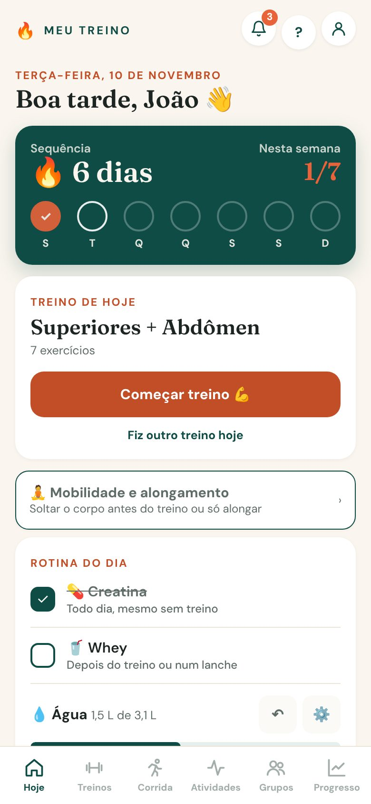
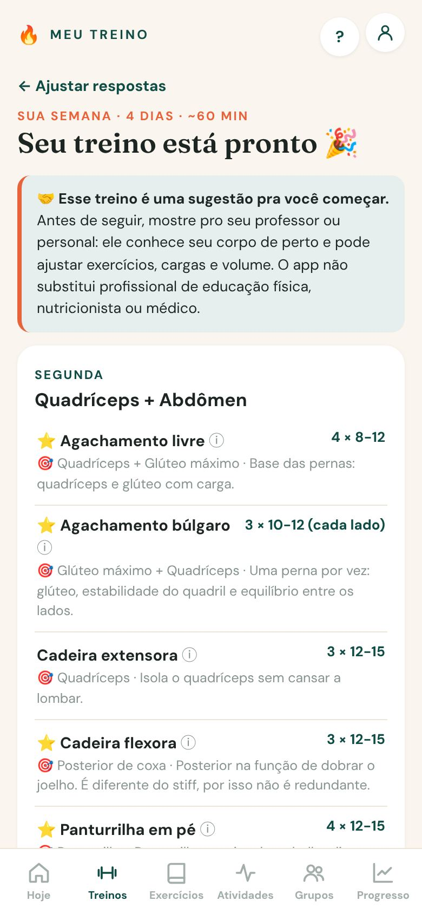
📲 Deixar com cara de aplicativo
O Meu Treino é um site que vira aplicativo: você abre o link uma vez, coloca na tela de início e depois ele abre em tela cheia, com ícone próprio, como qualquer app. Não precisa de loja, não ocupa espaço e se atualiza sozinho.
No iPhone (Safari)
- Abra o link do app no Safari (no Chrome do iPhone não aparece a opção).
- Toque no botão Compartilhar ⬆️, o quadradinho com a seta pra cima, na barra de baixo.
- Role a lista e toque em Adicionar à Tela de Início.
- Toque em Adicionar. Pronto: o ícone 🔥 aparece junto dos seus apps.
No Android (Chrome)
- Abra o link do app no Chrome.
- Toque nos três pontinhos ⋮ no canto de cima.
- Toque em Instalar app (em alguns celulares aparece Adicionar à tela inicial).
- Confirme. O app abre em tela cheia, sem a barra do navegador.
💡Abra sempre pelo ícone na tela de início, e não pelo navegador. É assim que as notificações, a voz e a tela cheia funcionam direitinho.
Atualizações automáticas
Quando sai uma versão nova, o app se atualiza sozinho na próxima vez que você abrir. Não precisa apagar o ícone nem instalar de novo. A versão atual aparece no fim da tela de Perfil.
👋 Primeiro acesso
Na primeira vez, o app pergunta só o básico. Leva menos de um minuto. Vamos acompanhar o João da Silva: 32 anos, 1,78 m, 92,4 kg, quer chegar nos 84 kg e treina na academia 4 vezes por semana.
Conte quem você é
Coloque como quer ser chamado, seu objetivo principal (emagrecer/definir, ganhar músculo ou saúde/começar agora), o peso de hoje e a meta. Depois ligue o que faz parte da sua rotina: vácuo abdominal, creatina, pré-treino e whey. Isso vira o checklist do dia.
🙋♂️O João escolheu Emagrecer / definir, peso 92,4 kg, meta 84 kg, e ligou Creatina e Whey.
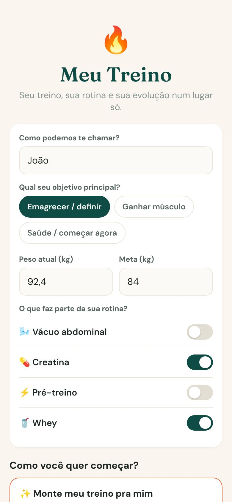
Nome, objetivo, peso e meta 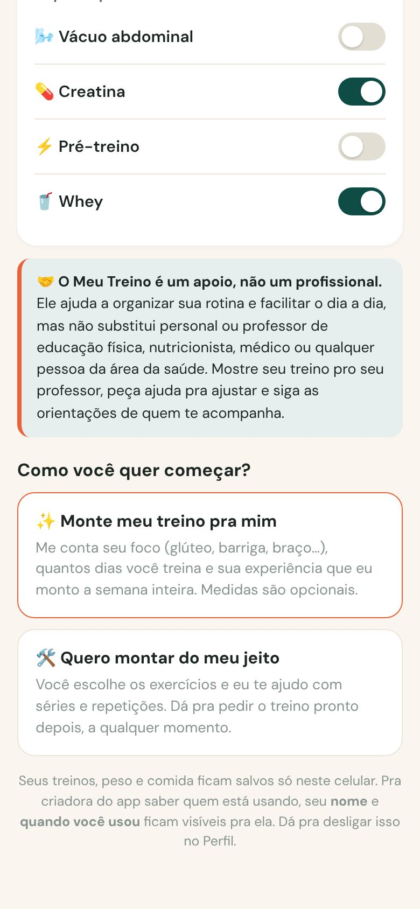
Rotina e como começar
Escolha como começar
✨ Monte meu treino pra mim: uma avaliação passo a passo e o app monta a divisão da semana inteira, do jeito que um professor faria.
🛠️ Quero montar do meu jeito: você escolhe os exercícios e o app ajuda com séries e repetições. Dá pra trocar de ideia depois, a qualquer momento.
🩺 A avaliação, em 6 etapas
Se escolher Monte meu treino pra mim, o app faz uma avaliação parecida com a de uma academia, que leva uns 3 minutos. Com pressa? Toque em ⚡ Versão rápida: são só 3 perguntas, e dá pra completar o resto depois. Tudo é opcional: dá pra pular qualquer pergunta. Mas quanto mais você contar, mais certeiro fica o treino. O app lembra das respostas, então se você refizer, não precisa digitar tudo de novo. Os números abaixo são os mesmos que aparecem no topo da tela (1 de 6, 2 de 6…).
Sobre você
Sexo (usado só pra estimar o percentual de gordura), idade, altura, peso e a medida da cintura, na altura do umbigo. Com altura e cintura o app já calcula a composição do corpo, sem usar IMC, que engana quem tem músculo.
Tem balança de bioimpedância? Se a sua balança mostra gordura, músculo e gordura visceral num app do celular, não precisa digitar nada:
- 📸 Ler foto da balança: tire um print da tela de resultados e escolha. O app lê os números sozinho, no próprio celular.
- ✏️ Digitar os números: escreva (ou fale pelo microfone do teclado), por exemplo: "peso 92,4, gordura 27,8, massa muscular 62,1, visceral 11".
Os campos são preenchidos e você confere antes de seguir.
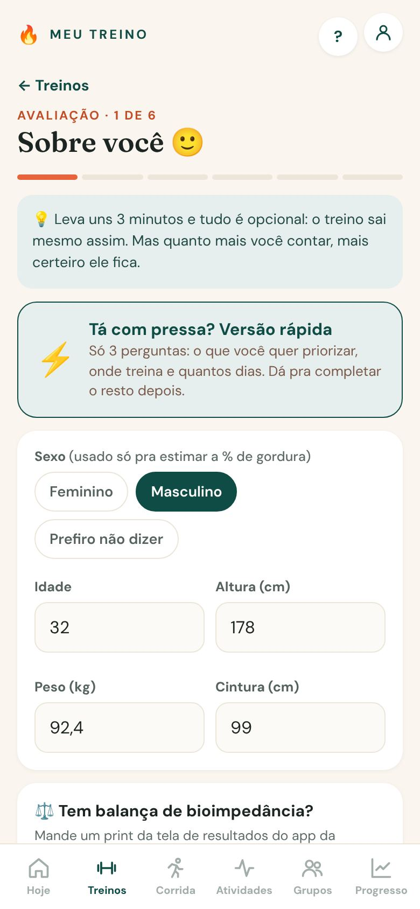
Dados básicos e cintura 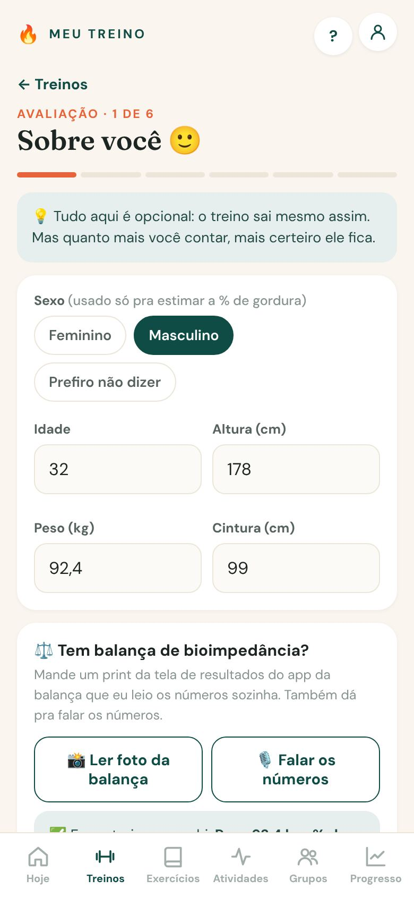
Números lidos do print da balança
Sua saúde
As mesmas perguntas de segurança que as academias usam (coração, pressão, tontura, doenças crônicas, remédios, gravidez) e se tem alguma dor ou lesão: joelho, lombar ou ombro. Se marcar uma dor, o app evita os exercícios que forçam aquela região e escolhe opções mais seguras.
🔒Se responder "sim" em alguma pergunta de saúde, o app não te impede de treinar, mas recomenda conversar com um médico antes de começar. As respostas ficam só no seu celular.
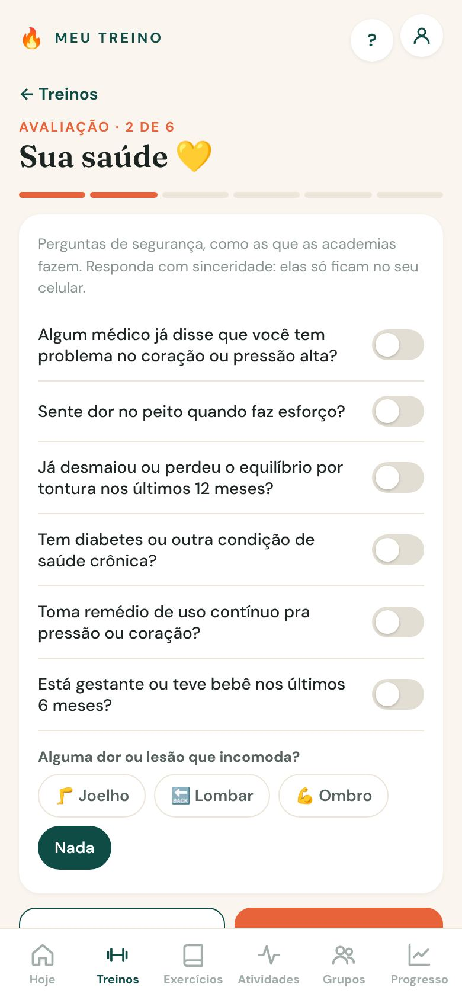
Perguntas de segurança Seu objetivo
Objetivo, meta de peso (ou de % de gordura) e até 3 prioridades: glúteo, pernas, costas, braços, ombros, peito, barriga ou corpo equilibrado. Dentro de cada uma dá pra afinar: nas costas, largura ("V") ou espessura; nas pernas, coxa completa ou frente (quadríceps); no glúteo, glúteo máximo ou médio (lateral).
🙋♂️O João priorizou Pernas (frente da coxa), Costas (completas) e Barriga.
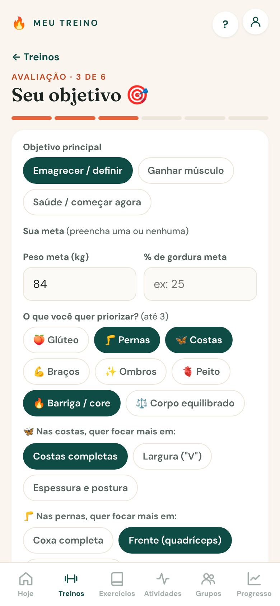
Objetivo, meta e prioridades Onde você treina
Academia completa, academia com poucos aparelhos ou em casa. Nas duas últimas, você marca o que tem (halteres, elástico, barra, polia…) e o app só sugere exercícios que dá pra fazer com isso. Nada de exercício que não existe na sua academia.
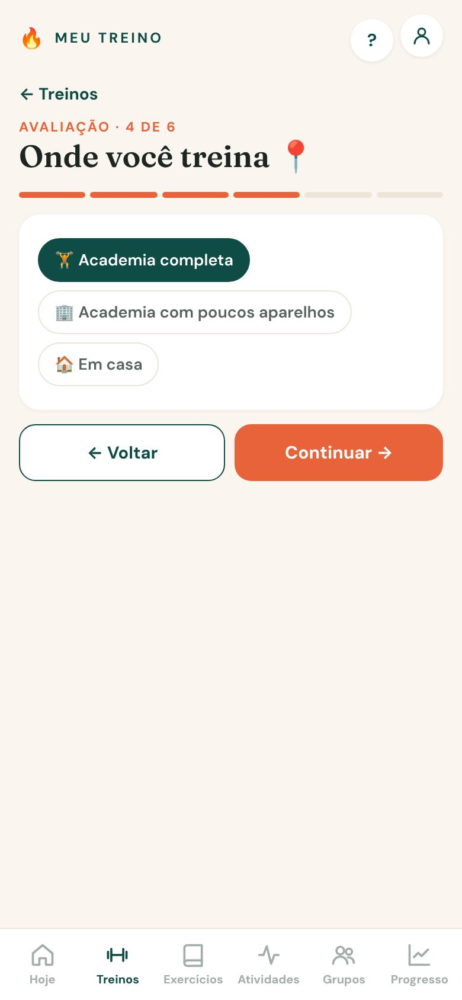
Onde treina 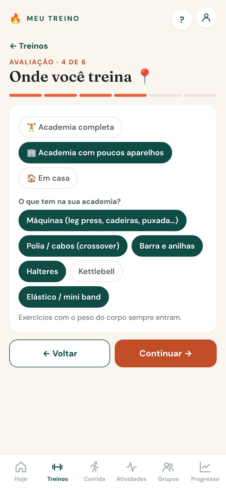
Marcando o que tem na academia Sua rotina
Quantos dias por semana, quais dias, quanto tempo por treino e há quanto tempo você treina. Com isso o app decide a divisão (quantos treinos, qual músculo em cada dia) e o volume certo pro seu nível.
🙋♂️O João treina 4 dias (segunda, terça, quinta e sexta), 1 hora por treino, e já treina há um tempo.
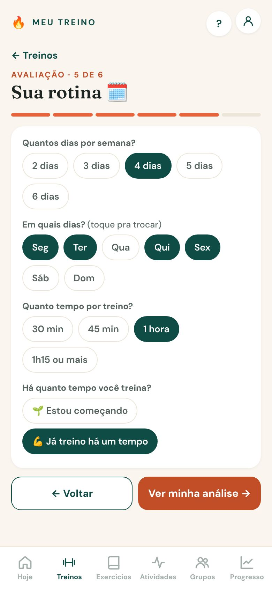
Dias, duração e experiência Sua análise
Antes de mostrar o treino, o app explica o que os números dizem: percentual de gordura, relação cintura/altura (acima de 0,5 merece atenção), massa muscular e gordura visceral. Depois mostra uma previsão realista da meta, num ritmo saudável de 0,5 a 0,8% do peso por semana, e o que fazer pra chegar lá.
🙋♂️Pro João: 27,8% de gordura (acima do ideal), cintura/altura 0,56 e visceral 11 (alta). Pra perder 8,4 kg com saúde, a previsão é de 12 a 19 semanas, ou seja, entre fevereiro e março de 2027, mantendo a constância.
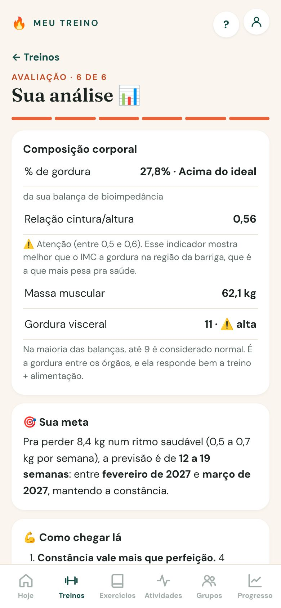
Composição corporal explicada 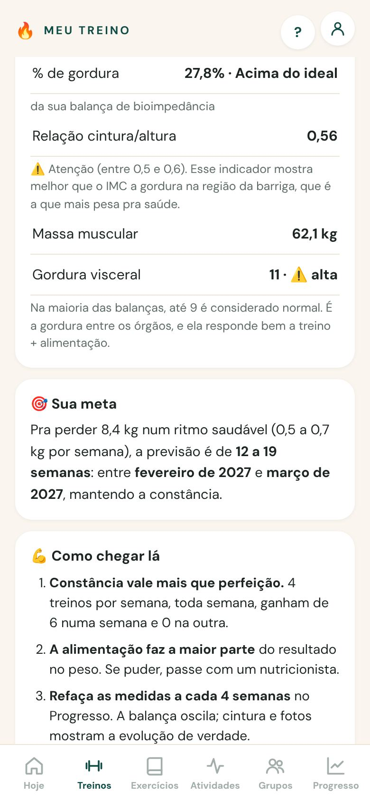
Meta, prazo e como chegar lá
🏋️ Seu treino pronto
Com a avaliação, o app monta a semana inteira seguindo as regras de um bom professor: começa pelos exercícios mais importantes, não repete movimentos parecidos no mesmo dia, respeita suas dores e dá mais volume pras suas prioridades sem exagerar.
A divisão da semana
Cada dia mostra os exercícios, as séries e repetições, e por que aquele exercício está ali. A ⭐ marca os essenciais. Se não gostar, toque em Ajustar respostas e gere de novo.
🙋♂️A semana do João ficou: segunda Quadríceps + Abdômen, terça Superiores + Abdômen, quinta Posterior + Glúteo + Abdômen e sexta Superiores.
O treino gerado
Volume semanal
Embaixo aparece quantas séries cada músculo recebe por semana. Pra quem já treina, as prioridades ficam entre 12 e 26 séries (pra iniciantes, de 8 a 16), e o resto recebe o suficiente pra manter. "No ponto" quer dizer que está dentro do ideal; "dá pra subir" quer dizer que tem espaço pra mais.
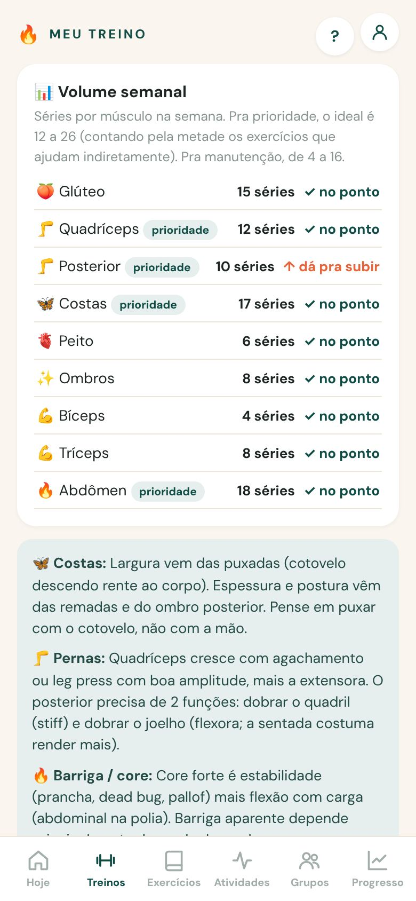
Séries por músculo na semana Usar o treino
Antes de seguir, mostre o treino pro seu professor ou personal: ele pode ajustar exercícios, cargas e volume pro seu corpo. Depois toque em Usar esses treinos. Se você já tinha treinos, escolha entre substituir os atuais ou adicionar sem apagar. Seu histórico de cargas continua salvo. Daqui pra frente, ele aparece na aba Treinos e, no dia certo, na tela Hoje.
☀️ A tela Hoje
É a tela principal. Tudo do dia num lugar só.
Sequência e semana
No topo, quantos dias seguidos você se movimentou 🔥 e quantos dias treinou na semana. Qualquer atividade conta: academia, corrida, caminhada, yoga.
Sequência, próxima corrida e check-in
Treino de hoje e rotina
Mostra o treino marcado pro dia, com o botão Começar treino. Fez outro treino (aparelho ocupado, mudou o plano)? Toque em Fiz outro treino hoje e escolha qual, ou monte com os exercícios que fez. Embaixo, o checklist: creatina, whey, vácuo, pré-treino. É só tocar pra marcar.
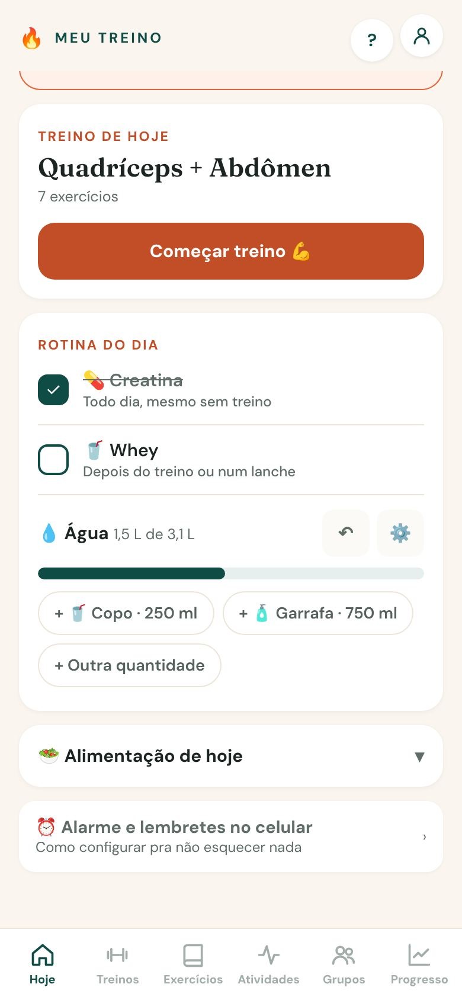
Treino do dia e checklist Água em um toque
Toque no copo ou na garrafa e a quantidade entra na conta. Pra cadastrar os seus recipientes (aquela garrafa de 750 ml, o copo de 250 ml), toque na engrenagem ⚙️ ao lado da água. A meta diária vem calculada pelo seu peso (35 ml por kg), mas, se sua nutricionista indicou outra (3 litros, por exemplo), é só colocar nessa mesma tela, em Sua meta diária de água.
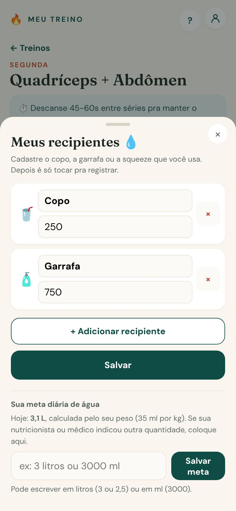
Cadastrando copo e garrafa
💪 Na academia
Na hora de treinar, o app vira sua ficha: mostra o que fazer, guarda a carga de cada exercício e lembra da última vez.
Seus treinos
Na aba Treinos ficam todos os seus treinos, com o dia da semana. Toque em Começar no treino do dia. O lápis ✎ edita, e Montar um novo treino da semana pra mim refaz a avaliação.
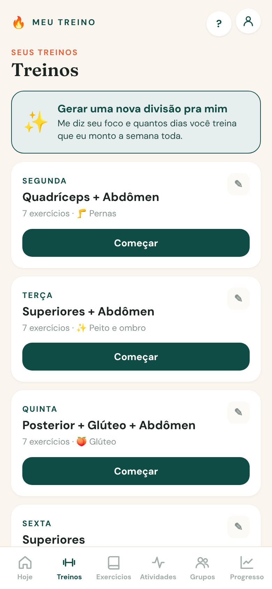
Lista de treinos
Durante o treino
Em cada exercício, o app já mostra a carga sugerida pra hoje, com base no seu último treino. Fez a série? Confira o peso (kg), coloque as repetições e toque em ✓ Terminei a série 1 de 4. O app marca a bolinha da série, liga o cronômetro do descanso e já deixa preenchido o peso da próxima. Na última série ele avisa: Exercício concluído! Bora pro próximo. Anotou errado? Toque em desfazer última. No fim, toque em Finalizar treino e coloque quantos minutos durou.
Descanso entre as séries: 2 a 3 min nos exercícios principais, como agachamento, leg press, remadas e supino, 1 a 1,5 min nos isolados e 45 a 60 s no abdômen. O cronômetro apita e vibra na hora da próxima série, e dá pra somar ou tirar 15 segundos.
Como subir a carga (progressão): se você passou 2 ou mais repetições do alvo (ex: fez 15 quando o máximo era 12), o app sugere subir um pouco já na próxima série. Se não chegou no mínimo, sugere tirar um pouquinho. De um treino pro outro, tente 1 repetição a mais com a mesma carga; quando fizer o máximo em todas as séries, ele sugere subir. Os aumentos são pequenos (2,5 a 5% em braço, peito, costas e ombro; 5 a 10% em pernas e glúteo), nunca dobrando o peso. Toque em Como funciona? pra ver as regrinhas.
Fez um exercício diferente do que estava na ficha? Em Trocar, procure pelo nome em Fez outro exercício?. Fez um a mais? No fim da ficha, ＋ Adicionar um exercício que fiz.
Registrou um treino que não fez? No fim da tela, Excluir o treino de hoje apaga o treino e as cargas daquele dia (no histórico de Atividades, o × faz o mesmo com treinos antigos). Logo depois aparece Desfazer embaixo da tela por alguns segundos.
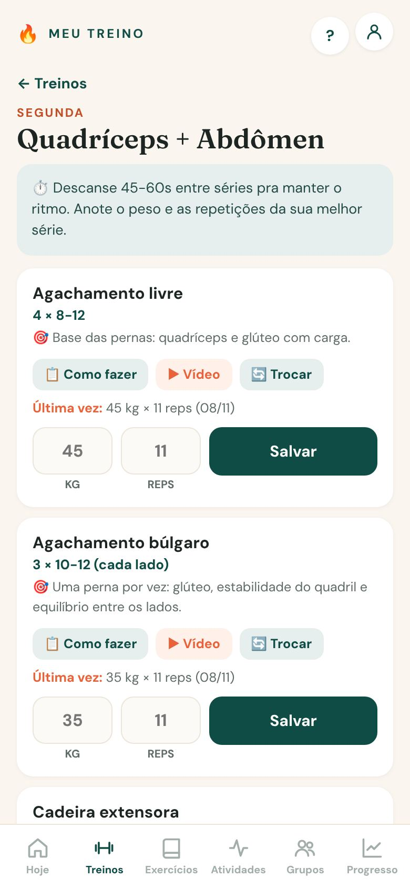
Contando as séries e sugerindo a próxima carga 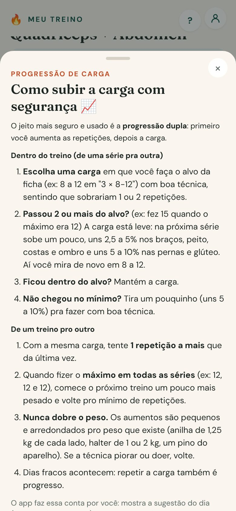
As regrinhas da progressão de carga Mobilidade e alongamento
Antes de treinar, faça a mobilidade: movimentos lentos que soltam as articulações, sem pulos. Depois do treino, o alongamento: segurar cada posição uns 30 segundos, respirando. O app escolhe os movimentos pelo treino do dia (pernas, parte de cima ou corpo todo) e tem uma versão pra corrida.
Na tela Hoje, toque em 🤸 Mobilidade antes. Dentro do treino, ela aparece no topo, e o 🧘 Alongar depois fica no fim da ficha. Em Treinos, o cartão Mobilidade e alongamento deixa escolher qualquer um.
Um bonequinho mostra o movimento, e a bolinha rosa mostra onde você deve sentir. Embaixo tem o passo a passo, o cuidado e um link pra vídeo. Toque em ▶ Começar: o cronômetro passa sozinho de um movimento pro outro, avisa quando trocar de lado e fala o nome do movimento (dá pra desligar a voz no 🔊). Alongamento é um puxão leve, nunca dor.
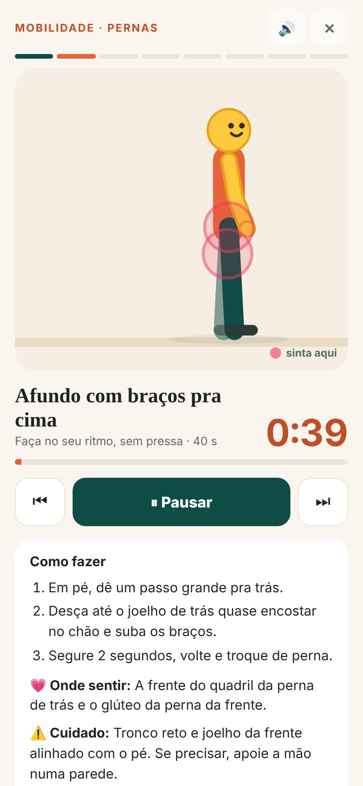
O bonequinho mostrando o movimento 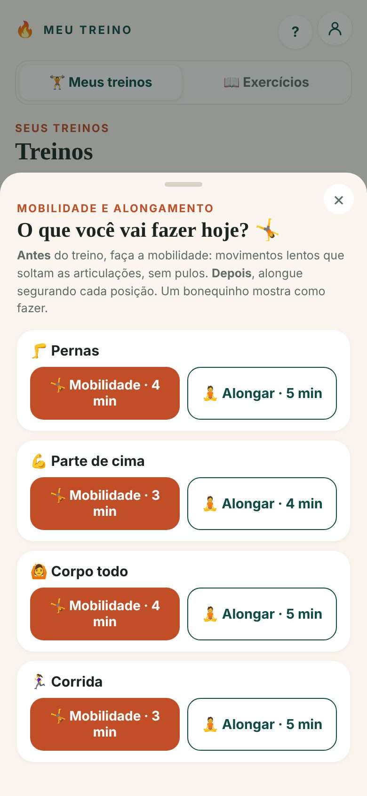
Escolhendo mobilidade ou alongamento Como fazer cada exercício
Toque em Como fazer pra ver o passo a passo, o que você deve sentir, o que não deveria sentir, os erros comuns e um vídeo de demonstração. No fim, a lista de variações parecidas.
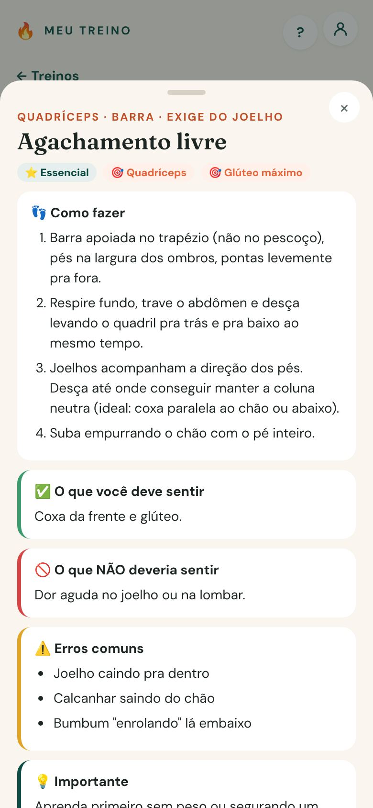
Passo a passo do exercício 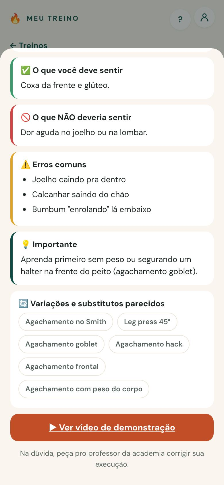
Erros comuns e variações Trocar um exercício
Aparelho ocupado? Joelho incomodando? Toque em Trocar, diga o motivo e o app sugere opções que trabalham o mesmo músculo, que respeitam a sua dor e que ainda não estão na sua ficha.
🙋♂️O João trocou o agachamento búlgaro porque incomodou o joelho. O app sugeriu hip thrust unilateral, hip thrust e coice na polia: mesmo foco no glúteo, menos carga no joelho.
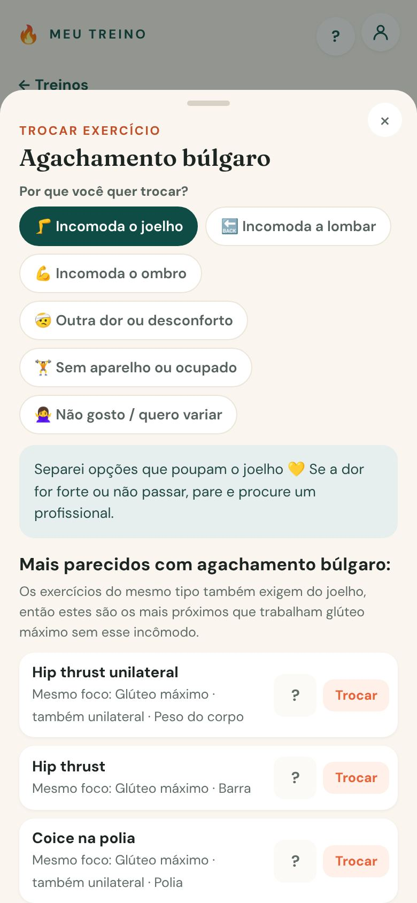
Sugestões parecidas Montar um treino do zero
Em Treinos → Montar novo treino, dê um nome, escolha o foco e adicione os exercícios. O app dá dicas pro foco escolhido e sugere séries e repetições.
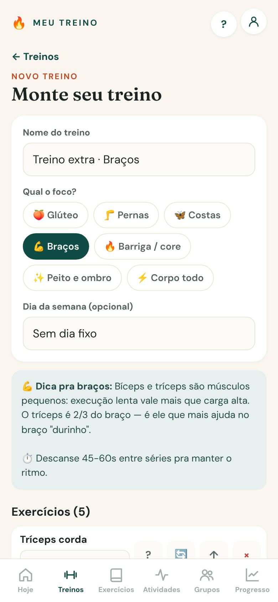
Montando um treino de braços Biblioteca de exercícios
Dentro de Treinos, toque na aba 📖 Exercícios (no topo). Lá estão os quase 200 exercícios, com busca e filtro por músculo. Cada um tem o passo a passo e o vídeo.
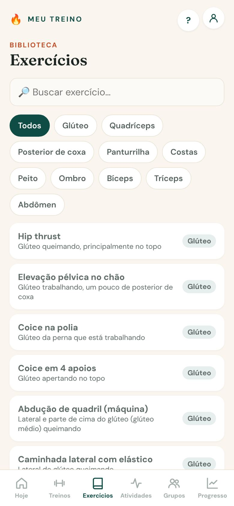
Biblioteca com filtros
📸 Card pra colar na foto
Terminou o treino ou a corrida? Dá pra gerar uma imagem bonita com o resumo e colar no seu story, igual aqueles adesivos de app de corrida. Aqui o exemplo é de musculação; o da corrida está na Parte 9.
Onde fica
Depois de finalizar o treino, a tela Hoje mostra o botão 📸 Card pra foto. Também dá pra criar de qualquer atividade antiga: na aba Atividades, toque no 📸 ao lado dela no histórico.
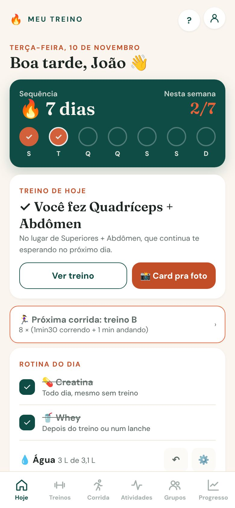
Botão depois do treino
Escolha o estilo
- ✨ Sticker transparente: só os números, com fundo transparente, pra colar em cima de uma foto sua. Dá pra escolher a cor do texto (branco, verde ou laranja), conforme a foto for mais escura ou mais clara.
- 🎨 Card colorido: uma imagem pronta, no tamanho do story, nas cores do app: verde, laranja ou creme.
- 🖼️ Na minha foto: escolha uma foto da galeria e o resumo vai por cima dela.
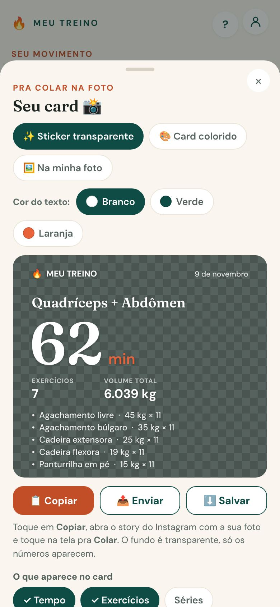
Sticker transparente 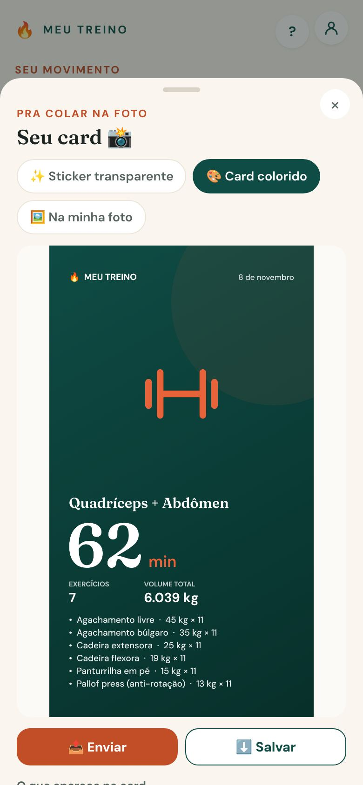
Card colorido Escolha o que aparece
Logo abaixo, ligue ou desligue as informações: tempo, exercícios, séries, volume total (quanto peso você levantou somando tudo), recordes de carga, sequência de dias, lista de exercícios com as cargas e a data. Dá pra mudar o título também. O app lembra das suas escolhas pra próxima vez.
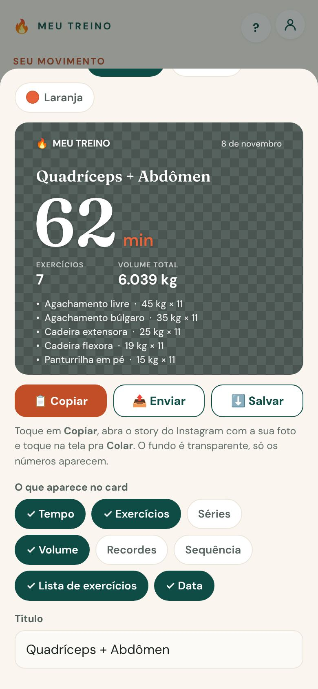
Escolhendo as informações Colar no story
- No sticker, toque em 📋 Copiar.
- Abra o Instagram, comece um story e escolha sua foto.
- Toque na tela e em Colar (ou use o adesivo de colar). O card aparece por cima da foto, e você arrasta e aumenta como quiser.
📤 Enviar abre o compartilhamento do celular (WhatsApp, Instagram…) e ⬇️ Salvar guarda a imagem.
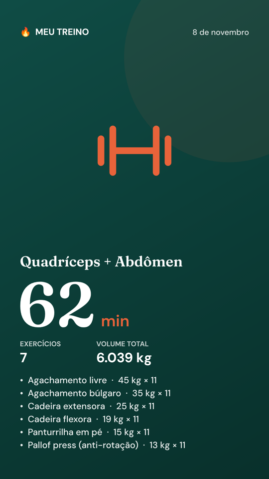
📝 Registrar o dia
Não gosta de ficar anotando? No fim do dia, conte como foi, do seu jeito, e o app registra tudo.
Conte tudo de uma vez
Na tela Hoje, toque em Registrar meu dia. Escreva normalmente: o que treinou, por quanto tempo, se tomou creatina e whey, quanta água, o que comeu. O app entende e mostra o que anotou. Se faltar algo, ele pergunta.
🙋♂️O João escreveu: "Treinei costas no almoço por 1 hora, tomei creatina e whey e bebi 2 garrafas de água". O app registrou o treino de costas (60 min, almoço), marcou creatina e whey e somou a água do dia.
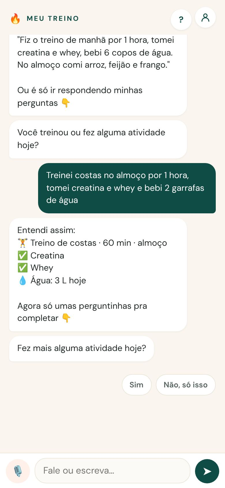
Conversa do check-in
Falando em vez de digitar
Prefere falar? Toque no microfone 🎤 do teclado do celular e fale: ele transforma a sua fala em texto. Como o Meu Treino ainda não é um app de loja, ele não consegue usar o microfone direto.
Uma voz mais natural
O app também fala com você (na corrida guiada, por exemplo). Em Perfil → Voz do app você escolhe a voz e a velocidade. No iPhone, as vozes marcadas com ⭐ são as mais naturais. Pra baixar uma voz melhor: Ajustes → Acessibilidade → Conteúdo Falado → Vozes → Português (Brasil) e escolha uma versão Aprimorada ou Premium.
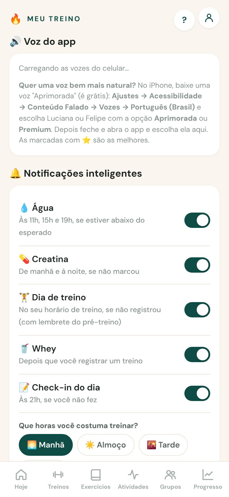
Escolhendo a voz
🏃♀️ Atividades e corrida
Tudo o que não é musculação também conta pra sua sequência: caminhada, bike, natação, yoga, pilates, dança, luta, esporte.
Registrar uma atividade
Na aba Atividades, toque no tipo, coloque a duração e preencha os detalhes de cada uma. É tudo opcional:
- Natação: metros ou quantas piscinas (25 ou 50 m, e o app calcula os metros) e o estilo (crawl, costas, peito, borboleta, medley).
- Yoga e pilates: o estilo (Hatha, Vinyasa, Hot yoga, Yoga aérea, Reformer, solo…), o foco (flexibilidade, força, respiração…) e se foi aula no estúdio, online ou em casa.
- Caminhada, corrida e bike: distância, passos e onde foi (rua, esteira, trilha, ergométrica…).
- Luta: a modalidade (jiu-jitsu, muay thai, boxe, judô, MMA…) e o que fez (técnica, sparring ou rola, condicionamento).
- Dança, funcional e esporte: o estilo ou a modalidade (zumba, forró, crossfit, HIIT, tênis, beach tennis, vôlei…) e se foi aula, treino ou jogo.
- Musculação registrada aqui: o que treinou (pernas, glúteo, costas…).
- Não achou o seu estilo? Toque em Outro e escreva. E pra uma atividade que não está na lista, use Outro lá no tipo.
Os detalhes aparecem no histórico e podem ir pro card pra foto (Parte 7), tocando no 📸 ao lado da atividade.
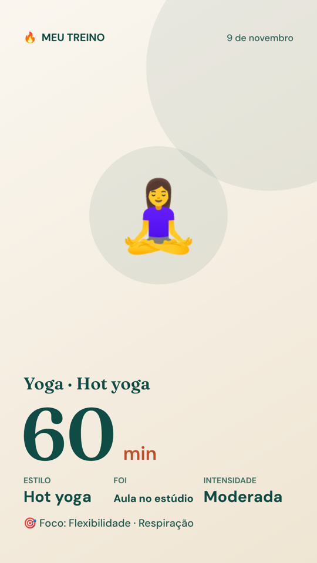
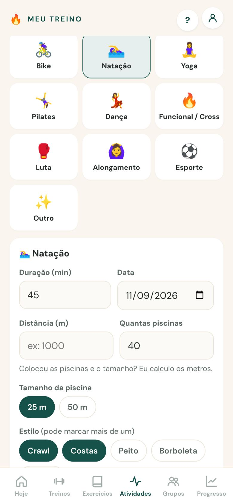
Detalhes da natação 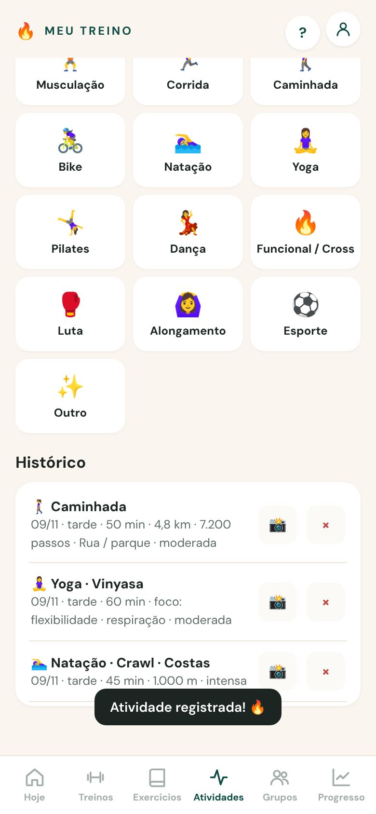
Histórico com os detalhes
Plano de corrida
A corrida tem uma aba só dela, a Corrida, na barra de baixo. Na primeira vez, diga como está sua corrida hoje e quantos dias quer correr. O plano começa bem leve, se precisar, com 1 minuto correndo e 30 segundos andando, e vai aumentando aos poucos até 30 minutos sem parar, 5 km, 10 km e além.
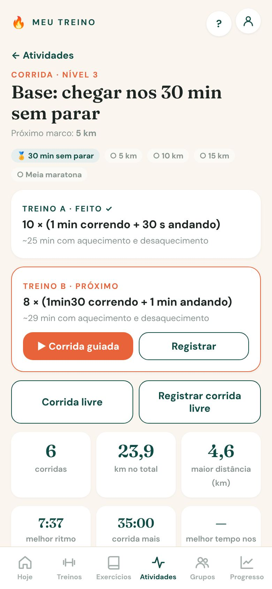
Treinos da semana 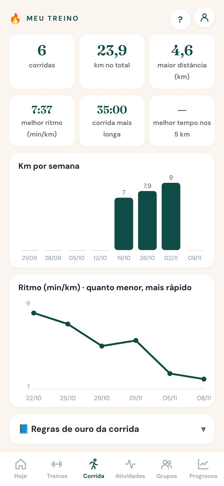
Sua evolução Sua próxima corrida em destaque
Depois de criar o plano, a aba Corrida abre com a sua próxima corrida em destaque, explicada em palavras simples, e um botão grande: ▶ Começar corrida guiada. Se você correu sem o app, toque em Já corri, quero só registrar. Embaixo ficam os treinos da semana, a corrida livre e a sua evolução.
Corrida guiada por voz
Toque em Corrida guiada e escolha Na rua ou no parque ou Na esteira. A voz avisa quando correr, quando caminhar, a metade e os últimos segundos, com bipes. Na rua, o GPS mede a distância, o ritmo, o percurso e a subida. A tela fica escura e acesa, pra gastar menos bateria.
⚠️Deixe a tela acesa e o app aberto. Se a tela bloquear, a corrida não é encerrada: o tempo continua contando e, quando você desbloquear, tudo segue de onde parou (mesmo se o celular tiver fechado o app). Mas, com a tela bloqueada, a voz e o GPS ficam pausados, então a distância e o percurso desse trecho podem sair imprecisos. Abaixe o brilho pra economizar bateria.
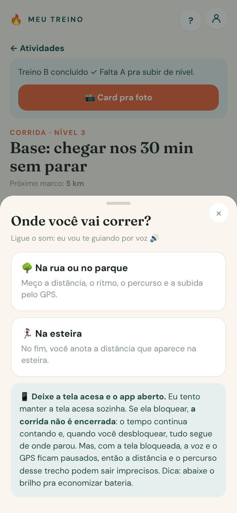
O aviso antes de começar 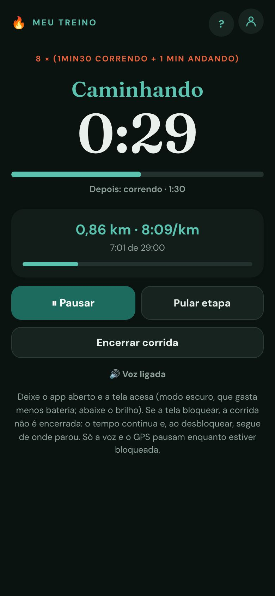
Durante a corrida No fim da corrida
Diga como foi: fácil, ok ou difícil, e se sentiu dor. O app decide o próximo passo: fácil ou ok, avança; difícil, repete; duas difíceis seguidas, volta um nível; dor forte, volta um nível e pede descanso.
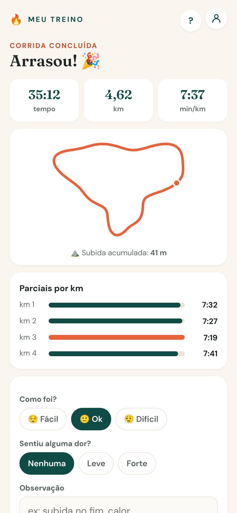
Como foi a corrida Percurso, subida e parciais
Nas corridas na rua, o fim mostra o desenho do percurso, quanto você subiu (⛰️) e quanto tempo levou em cada quilômetro, com o mais rápido em laranja.
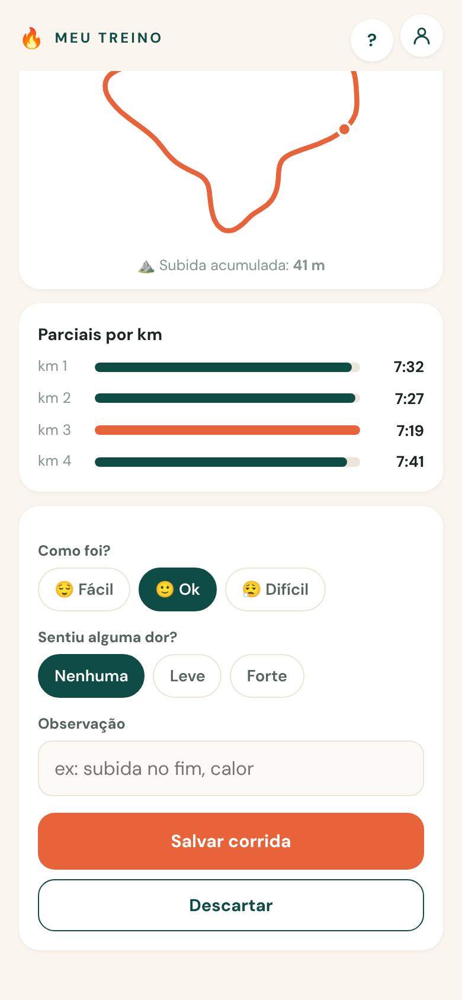
Percurso e parciais por km Card da corrida
Depois de salvar, toque em 📸 Card pra foto (ou no 📸 do histórico). Funciona igual ao da musculação (Parte 7): sticker transparente com o percurso, card colorido ou em cima da sua foto, e você escolhe se aparecem distância, tempo, ritmo, subida, percurso e parciais.
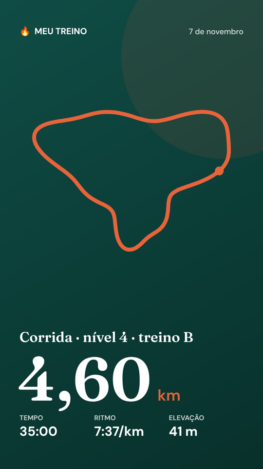
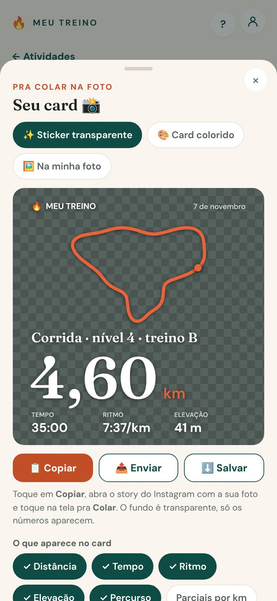
Card da corrida
📈 Progresso
Pra ver que está funcionando, mesmo nas semanas em que a balança não ajuda.
Peso
Registre o peso quando quiser (de preferência no mesmo horário, em jejum). O gráfico mostra o caminho até a meta e quanto já perdeu.
🙋♂️O João saiu de 92,4 kg e já está em 89,8 kg: 2,6 kg a menos, 31% do caminho.
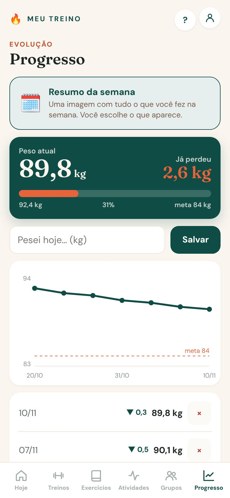
Peso rumo à meta
Medidas
Em Registrar novas medidas, coloque cintura, abdômen, quadril, braço e, se tiver balança de bioimpedância, gordura, músculo e visceral (dá pra ler a foto da balança aqui também). O app compara com a medição anterior. O ideal é medir a cada 4 semanas.
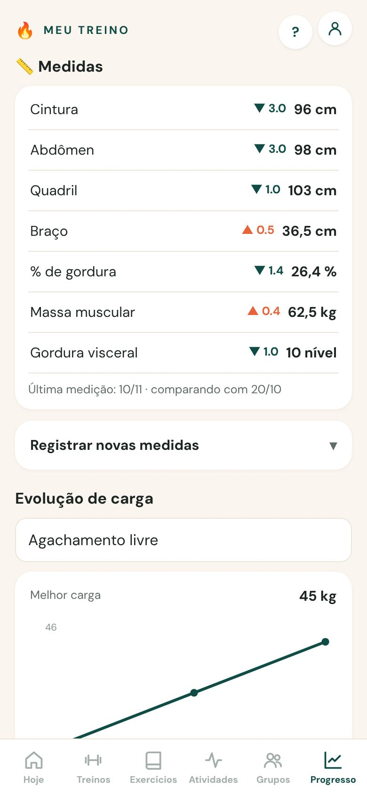
Comparação das medidas Resumo da semana em imagem
No topo do Progresso (ou em Atividades), toque em Resumo da semana. O app monta uma imagem com tudo o que você fez: dias ativos com as bolinhas da semana, treinos, outras atividades, tempo total, distância, volume levantado, recordes, água, rotina, sequência, peso e o que você fez em cada dia.
Você escolhe esta semana ou a passada, liga ou desliga cada informação, troca o título e escolhe o estilo (card colorido em verde, laranja ou creme, sticker transparente ou em cima da sua foto). Depois é só salvar ou enviar. O peso começa desligado: só aparece se você quiser.
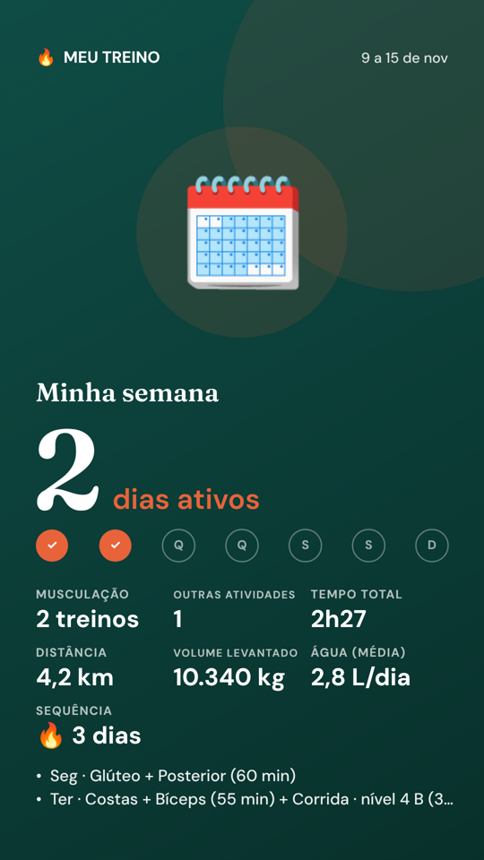
Escolhendo o resumo Relatório de evolução
Também no topo do Progresso, o Relatório de evolução mostra o quanto você evoluiu nos últimos 30 dias, nos últimos 3 meses ou desde o começo: peso e % da meta, cintura, % de gordura, dias ativos, treinos, corridas, ritmo, maior sequência e as cargas que mais subiram. Ele vira uma imagem, com as mesmas opções de estilo do resumo da semana.
💡O relatório é feito com o que você registra. Se ainda tiver pouca coisa, o app avisa o que vale começar a anotar: peso de vez em quando, as cargas dos exercícios, as medidas uma vez por mês e os treinos. Quanto mais registro, mais completo ele fica.
Evolução de carga
Escolha um exercício e veja como a carga subiu ao longo das semanas. É a prova de que você está ficando mais forte.
Carga do agachamento
👯♀️ Grupos
Treinar junto motiva. Crie grupos com amigos, família ou colegas e acompanhe a constância de cada um.
Criar ou entrar num grupo
Na aba Grupos, toque em + Novo / entrar. Pra criar, dê um nome. Pra entrar, cole o código que alguém te mandou. Dá pra participar de vários grupos.
Criar ou entrar
Convidar pessoas
Cada grupo tem um código. Toque em Copiar ou em Convidar pra mandar pelo WhatsApp.
🙋♂️O grupo do João se chama "Amigos" e o código é AMG7K2QX.
Feed e pessoas
No Feed aparece o resumo do dia de cada um: treinos, sequência e rotina. Dá pra reagir com 👏 🔥 💪 ❤️. Em Pessoas, a sequência e os dias de treino na semana de todo mundo.
🔒Peso, medidas e o que você comeu nunca aparecem nos grupos. Em "O que eu compartilho" você escolhe o resto, e pode desligar o seu dia em cada grupo.
Feed do grupo Pessoas do grupo
⚙️ Perfil, lembretes e privacidade
Toque no bonequinho no canto de cima pra abrir o Perfil.
Suas informações
Nome, objetivo, peso inicial, meta e os itens da rotina. Mudou de ideia sobre o whey? É aqui.
Dados do perfil
Notificações inteligentes
Ligue as notificações, escolha o que quer receber e o horário de cada lembrete: vácuo, creatina, pré-treino, hora do treino, whey e check-in. O app só avisa o que ainda não foi registrado: se você já marcou a creatina, ele não insiste. O aviso pode chegar alguns minutos depois do horário.
⚠️No iPhone, as notificações só funcionam com o app instalado na tela de início (Parte 1).
Escolhendo os lembretes Modo escuro
Em Perfil → Aparência, escolha Igual ao celular (o app fica escuro quando o seu celular está no modo escuro), Claro ou Escuro. À noite, cansa menos a vista.
Backup: pra não perder nada
Seus treinos, peso, medidas, saúde e comida ficam neste celular. Se trocar de aparelho, apagar o app ou limpar o navegador, eles vão junto. Por isso, no Perfil tem dois jeitos de guardar uma cópia:
- ☁️ Backup automático na nuvem (recomendado): crie uma senha de backup (8 caracteres ou mais) e pronto. A cópia é atualizada sozinha toda semana e vai criptografada com a sua senha: nem a criadora do app consegue ver o conteúdo. Se perder o celular, peça o link de recuperação pra criadora, abra no celular novo e coloque a sua senha.
- 📁 Backup em arquivo: Exportar gera um arquivo com tudo. No iPhone, escolha Salvar em Arquivos ou mande pro seu próprio WhatsApp ou e-mail. No celular novo, use Importar.
⚠️Anote a senha de backup num lugar seguro. Sem ela, ninguém consegue abrir o backup da nuvem. E se passar um mês sem backup, a tela Hoje te lembra.
🔒A criadora do app vê apenas o seu nome e quando você usou, pra saber se está funcionando. Dá pra desligar isso no Perfil.
Backup na nuvem e em arquivo Privacidade
❓ Dúvidas frequentes
O app substitui meu personal ou nutricionista?
Não. O Meu Treino é um apoio pra organizar a rotina e facilitar o dia a dia. Quem acompanha seu corpo de perto é o profissional: mostre seu treino pro seu professor ou personal, peça ajuda pra montar ou ajustar, e siga as orientações da sua nutricionista e do seu médico.
Preciso de internet pra usar?
Pra treinar, não: o app funciona offline. Precisa de internet pros grupos, pras notificações e pra ler a foto da balança.
Perdi meus dados?
Os dados ficam no navegador do seu celular. Se você apagar o app ou limpar os dados do navegador, eles somem, por isso vale exportar o backup de vez em quando (Perfil → Backup).
O microfone do app não funciona no iPhone.
No iPhone, use o microfone 🎤 do próprio teclado. Ele funciona em qualquer campo de texto.
Achei o treino pesado demais (ou leve demais).
Na aba Treinos, toque em Montar um novo treino da semana pra mim e ajuste o nível ou o tempo. Na corrida, dá pra subir ou descer de nível em Ajustar plano.
Senti dor durante um exercício.
Pare. Use o botão Trocar e diga onde dói: o app sugere alternativas. Se a dor continuar, procure um profissional. O app ajuda, mas não substitui professor, médico ou nutricionista.
Como mando o app pra alguém?
Mande o mesmo link. Cada pessoa tem o próprio perfil e os próprios dados. Também tem o botão Compartilhar o app no Perfil.